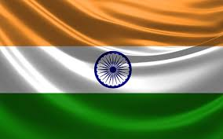

By 55,000 years ago, the first modern humans, or Homo sapiens, had arrived on the Indian subcontinent from Africa, where they had earlier evolved. The earliest known modern human remains in South Asia date to about 30,000 years ago. After 6500 BCE, evidence for domestication of food crops and animals, construction of permanent structures, and storage of agricultural surplus appeared in Mehrgarh and other sites in what is now Balochistan, Pakistan. These gradually developed into the Indus Valley Civilisation, the first urban culture in South Asia,[75] which flourished during 2500–1900 BCE in what is now Pakistan and western India.[76] Centred around cities such as Mohenjo-daro, Harappa, Dholavira, and Kalibangan, and relying on varied forms of subsistence, the civilisation engaged robustly in crafts production and wide-ranging trade.